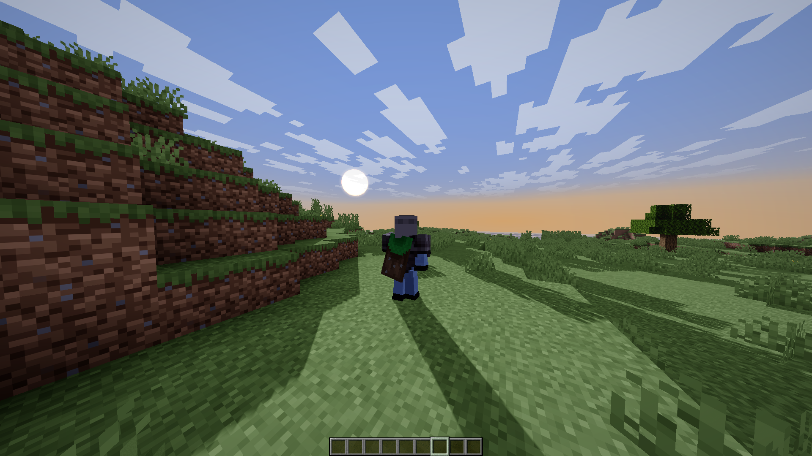

Make your Minecarft Gameplay Immersive!
Sulkan transforms everyday gameplay into a cinematic world with bold lighting, rich water, and dramatic atmosphere. Built for players, creators, and communities that want a recognizable visual identity.
Sulkan transforms everyday gameplay into a cinematic world with bold lighting, rich water, and dramatic atmosphere. Built for players, creators, and communities that want a recognizable visual identity.


Sulkan is designed to give your gameplay, streams, and trailers a clear signature look. Whether you run solo builds or full communities, Sulkan helps every scene feel intentional.
Experience dramatic sunsets, clearer depth, and smoother atmosphere from your first launch.
Capture sharper highlights and cleaner scenes for social media clips and long-form content.
Build a recognizable atmosphere for your brand, events, and player onboarding moments.
Sulkan balances visual quality with practical controls, so you can choose a profile that fits your style and setup.
Pick the right rendering intensity for cinematic captures or smooth daily gameplay.
Install, launch, and start seeing immediate improvements without complex setup loops.
From cave glow to ocean reflections, Sulkan emphasizes visual storytelling in every environment.
Perfect for modpacks and creator groups that care about both quality and identity.